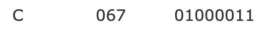
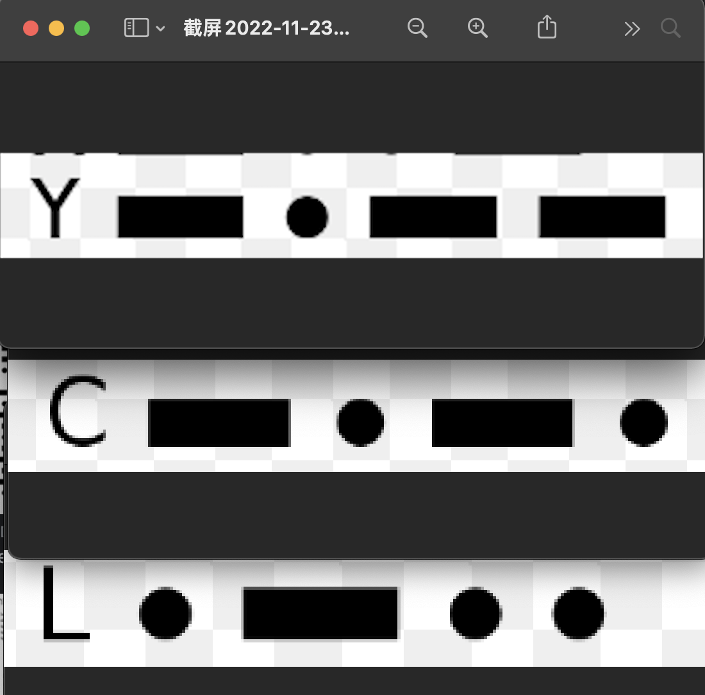

[click on the title to see the video]
controlling the led with a button, I turned the led on everytime I found my eye blinking. I tried to imitate the way that algorithm and machine learning see the world as accurate as possible, but it was not an easy case
C 
a led blinking system representing C (C for Chenlan)
YCL 
a led blinking system representing the abbreviation of my name